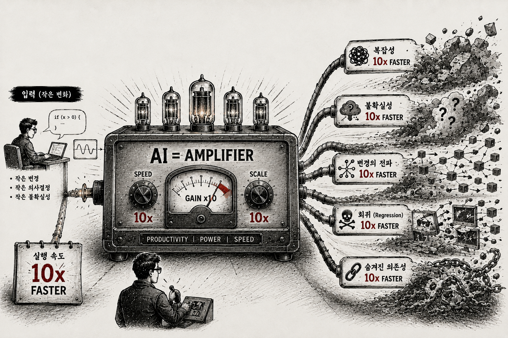

지능을 쓰는 툴LLM을 호출하는 블로그 글쓰기 에이전트
앞 트랙들은 만들어진 하네스를 실행했다. 이번엔 한 칸 들어가, LLM API를 툴 안에서 직접 호출하는 에이전트의 설계를 본다. 돌리는 코드가 아니라 개념 가이드다.
이 트랙으로 얻는 것
- 지능을 쓰는 툴 — 툴이 정해진 일만 하는 게 아니라, 그 안에서 LLM을 불러 판단·생성한다
- 툴 안 프롬프트에 요구사항 + 하네스를 함께 실어 결과를 제어하는 법
- 한 방에 믿지 않고 LLM-as-Judge로 검증 → 수정하는 루프
코드를 실행하지 않는다. 아래 프롬프트·의사코드는 개념용 예시다. 전용 템플릿 레포는 준비 중.
툴이 지능을 쓴다
보통 툴은 정해진 일만 한다 — fetch_url()은 페이지를 가져온다. 하지만 툴 안에서 LLM을 호출하면, 규칙으로 못 박을 수 없는 일(글을 쓰고, 채점한다)을 하는 툴이 된다.
일반 툴 입력 → [정해진 규칙] → 출력 (결정적)
지능형 툴 입력 → [프롬프트로 LLM 호출] → 출력 (판단·생성)제어는 프롬프트에서 일어난다. 요구사항(무엇을)만 주지 않고 하네스(형식·톤·제약·금지)를 함께 실어 방향을 잡는다 — 시리즈 3의 하네스가 툴 호출 하나 안에서도 똑같이 작동한다.
흐름
한 방에 뽑지 않는다. 사람이 쓰는 순서대로 — 모으고 · 쓰고 · 따지고 · 고친다.
출처 fetch ──► 초안 ──► 자기검증(Judge) ──► 통과? ─► 완성
(결정적) (LLM) (LLM) │
▲ │ 미달
└─────── 수정(LLM) ◄─────────┘ (최대 N회 → 사람에게)
1번만 결정적 툴이고 나머지는 모두 같은 LLM이다. 어떤 프롬프트를 받느냐에 따라 작가도, 심사위원도, 편집자도 된다.
프롬프트 = 요구사항 + 하네스
이 트랙의 심장. "글 써줘"가 아니라 무엇을·어떻게·무엇은 하지 말 것까지 한 프롬프트에 싣는다.
# 의사코드 — 툴 안에서 LLM을 부르는 모양 (실행용 아님)
prompt = f"""
[요구사항] 주제 {topic}, 독자 {audience}. 아래 출처에 근거해서만 쓴다.
[하네스] 구조 도입→본문 3단락→결론 / 800자 / 단정한 한국어, 1인칭 "우리"
금지: 과장 형용사, 출처 없는 단정, 메타 안내
[출처] {sources}
"""
draft = call_llm(model="claude-opus-4-8", prompt=prompt)자기검증은 같은 트릭을 뒤집는다 — 작가에게 준 하네스를 채점 루브릭으로 던져 "이 초안이 그걸 지켰나?"를 묻는다. 자기 글을 후하게 보는 편향을 끊으려 별도 호출로 한다(시리즈 5: 실행이 싸지면 판단이 비싸진다).
for _ in range(max_rounds):
verdict = judge(draft) # LLM: 루브릭 채점 → pass / revise
if verdict == "pass": break
draft = revise(draft, verdict) # LLM: 지시대로 수정
# 상한 도달 → 토해내지 않고 사람에게 넘긴다 (게이트)"AI가 글을 뽑아준다"와의 차이는 한 줄이다 — 생성을 구조 안에 가둔다. 출처는 코드로, 방향은 하네스로, 결과는 별도 심사로, 실패는 제한 안에서 복구하다 사람에게.
전용 템플릿 레포가 공개되면 여기서 연결한다. 그때
draft·judge프롬프트를 직접 바꿔가며 "하네스를 바꾸면 결과가 어떻게 휘는지"를 손으로 확인한다.